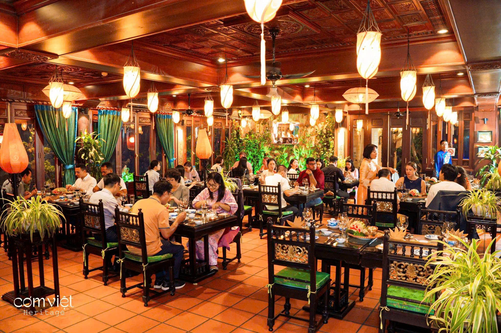

Về Văn Hóa Ẩm Thực Hà Nội
Sự kết tinh của lịch sử và sự khéo léo của người Tràng An

Ẩm thực Hà Nội từ lâu đã nổi tiếng bởi sự tinh tế trong cách chế biến, sự kết hợp hài hòa giữa các gia vị và nét thanh lịch của người thưởng thức. Mỗi món ăn không chỉ đơn thuần là thực phẩm mà còn chứa đựng cả câu chuyện văn hóa, lịch sử lâu đời.
Từ những gánh hàng rong mộc mạc đến các quán ăn gia truyền trong khu Phố Cổ, nét ẩm thực Kinh kỳ luôn giữ trọn hương vị nguyên bản, thanh tao, phản ánh rõ nét tinh thần và phong cách sống chỉn chu của người dân Hà thành.